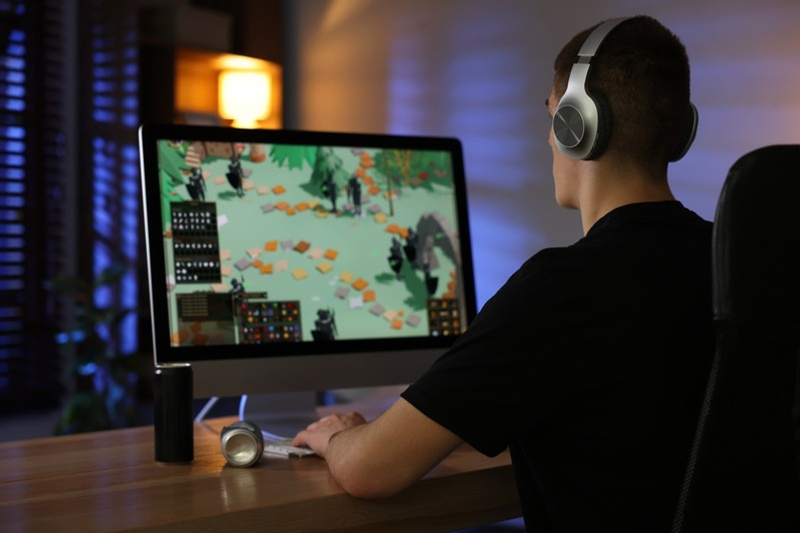

The 2 PM Wall
Why the afternoon slump is a fuel problem, and what to do about it without another coffee.

Around 2 PM the market goes quiet. Volume thins out, ranges compress, and the setups I care about stop showing up for a couple of hours. That part is normal.
What is not normal, or at least not necessary, is that my brain used to go quiet with it.
For years my answer was another coffee. Sometimes two. It worked in the sense that I stopped feeling tired. It did not work in the sense that I traded well. Caffeine at 2 PM bought me alertness and charged me jitter, a flatter mood by 5, and a worse night of sleep that made the next afternoon harder. I was borrowing from tomorrow to patch today, every day, and calling it a routine.
If you work through your afternoons, you already know the feeling. Here is what actually causes it, and the options that do not involve a fourth cup.
What the slump actually is
Two things stack up around the same time.
The first is your circadian rhythm. Roughly seven to nine hours after you wake, alertness dips on its own. This happens whether you ate lunch or not, whether you slept well or not. It is a scheduled event in your biology, not a personal failing.
The second is fuel. Your brain runs primarily on glucose, and it is expensive to run. A carb-heavy lunch spikes blood sugar and then drops it, and the drop lands right on top of the circadian dip. Two curves bottoming out at once is why 2 PM feels different from 11 AM.
Caffeine does not address either one. Caffeine blocks adenosine, the molecule that accumulates while you are awake and makes you feel sleepy. Blocking the signal is not the same as adding fuel. The adenosine is still there, still building, waiting for the block to wear off. That is the crash. It was never energy. It was a delay.
Understanding that changed what I looked for. I did not need a stronger stimulant. I needed something that was actually fuel.
The options that work, ranked by how annoying they are
A short walk outside. Ten minutes of daylight and movement is the cheapest, best-evidenced fix on this list. It costs nothing and it is the one nobody does, because it requires leaving the desk. If you take one thing from this piece, take this one.
A cold room and a hard task. Slumps are worse in a warm, dim room doing shallow work. Drop the thermostat, open a window, and put your most demanding task in the 2 PM block instead of your easiest one. Boredom deepens the dip.
Eating differently at lunch. Protein and fat forward, lighter on fast carbs. You are flattening the glucose curve so it does not collide with the circadian one. This works well and takes a week or two of habit change before it feels normal.
A twenty minute nap. Genuinely effective, genuinely impractical for most people with a calendar.
Moving your caffeine earlier instead of adding more. Caffeine has a half life around five to six hours, which means a 2 PM cup still has meaningful caffeine in your system at 8 PM. Cutting off caffeine by early afternoon usually improves sleep quality, and better sleep is the actual long term fix for afternoon slumps. Most people would rather add a coffee than move one.
Ketones. This is the one I landed on, so it is worth explaining properly rather than just naming a product.
Ketones as a nutrient, not a stimulant
When glucose is scarce, your liver makes ketones and your brain uses them as fuel. This is standard human metabolism, not a hack. It is what happens overnight, during fasting, and on a ketogenic diet. Your brain is already built to run on them.
The newer part is that you can drink them directly, without fasting and without changing your diet. You are not blocking a tiredness signal. You are giving your brain a fuel source it already knows how to use, at the exact hour the glucose curve is sagging.
That is the real distinction, and it is why the word choice matters. A stimulant hides the tired. A nutrient feeds the work.
Kenetik is what I drink for this. Twelve grams of ketones per can, zero caffeine, zero sugar, 60 calories, nothing artificial. There is also a two ounce shot with ten grams plus electrolytes when I want something faster and smaller. It is Informed Sport certified, which means every batch is tested for banned substances, and it is the official ketone shot of TRX.
The claim I will make for it is narrow and it is the only one I make: it supports clarity, focus, and cognitive endurance. Not a cure for anything. Not a replacement for sleep. Not magic.
On the numbers, an independent University of Pennsylvania study (Li et al., 2024) measured roughly four times the circulating ketones compared to the leading commercial ketone product. That is a delivery comparison, not an outcome promise. Different products get different amounts of the same nutrient into your blood, and that difference is measurable.
What it changed for me
The honest version: my afternoons got boring in the best way.
I do not get the lift I used to get from a third coffee. I also do not get the 4 PM flatness, the tight chest during a live trade, or the 11 PM stare at the ceiling wondering why I am wired. The second half of the session feels like the first half. That is all I wanted.
Two things I would tell you before you try it. It is not a stimulant, so if you are expecting a jolt you will think it did nothing. And it does not fix a five hour night. Nothing does.
The actual protocol
Walk for ten minutes at the first sign of the dip. Put your hardest task in that block, not your easiest. Stop caffeine by early afternoon so tonight's sleep is not paying for today's fatigue. And if you want fuel instead of a delay, drink ketones at the front edge of the slump rather than at the bottom of it.
None of that requires a fourth cup. Most of it does not require buying anything at all.
If you want to try the ketones part, my link is drinkkenetik.com/EDDIEG. I earn a commission on purchases through it.
Earlier: When the Bank Says No, a field guide to fast business funding.
Publishing notes
Subtitle (Substack): Afternoon energy slump: how to fix it without coffee, and why a fourth cup keeps making tomorrow worse.
Medium tags: Productivity, Focus, Ketones, Nutrition, Energy
Target keyword: afternoon energy slump how to fix without coffee (Kenetik Keyword Bank #8)
Cover image: creative/article-cover-afternoon-energy-slump.png (1200x630)
Word count: ~1,050
Compliance check: consumer angle only, no investor framing. Kenetik never called an energy drink. Benefit language capped at "supports clarity, focus, and cognitive endurance." UPenn figure stated as a delivery comparison, cited to Li et al. 2024, no outcome promise. Referral disclosure at top and at the CTA. No em or en dashes. No emoji.